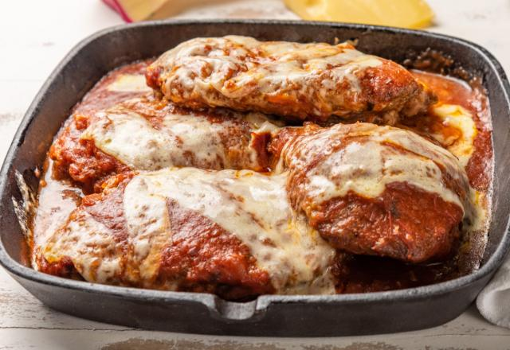

Filé à Parmegiana

Descrição
O Filé à Parmegiana é um prato clássico da culinária ítalo-brasileira que conquistou o paladar nacional. Consiste em um filé empanado, coberto com molho de tomate e queijo derretido. É uma combinação perfeita de texturas e sabores que agrada a todos os gostos.
Ingredientes
- 8 bifes de filé mignon
- 2 ovos batidos
- 2 xícaras de farinha de rosca
- 1 xícara de farinha de trigo
- 500g de queijo muçarela fatiado
- 500ml de molho de tomate
- Sal a gosto
- Pimenta do reino a gosto
- Óleo para fritar
- Queijo parmesão ralado
- Orégano a gosto
Modo de Preparo
- Tempere os filés com sal e pimenta.
- Passe os filés na farinha de trigo, depois no ovo batido e por último na farinha de rosca.
- Frite os filés em óleo quente até dourar dos dois lados.
- Em um refratário, coloque uma camada de molho de tomate, os filés fritos, mais molho por cima.
- Cubra com as fatias de muçarela e polvilhe queijo parmesão e orégano.
- Leve ao forno preaquecido até o queijo derreter e gratinar.
Voltar